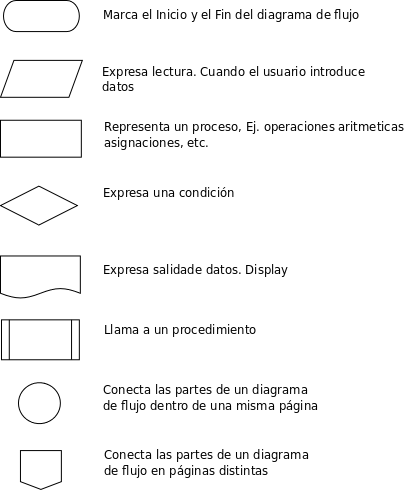

Eventos en JS
Hay 3 formas de ejecutar eventos en JS
- Como atributo del selector
- Como manejador de Eventos Semántico
- Como manejador de Eventos Múltiple
Evento como atributo
Evento como manejador semántico
Evento como manejador múltiple
Saludemos
Algoritmo
¿Cómo determinamos si un numero es par o impar?
- Saber cuál es el numero a determinar si es par o impar
- Dividir el número entre 2
-
Evaluar el residuo, con la operación del módulo:
- Si el residuo es 0, el número es par
- Si el residuo es 1, el número es impar
Diagrama de Flujo
